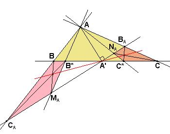
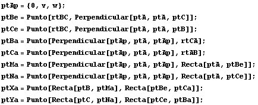
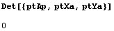
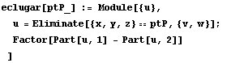
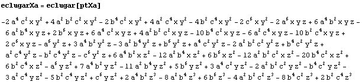
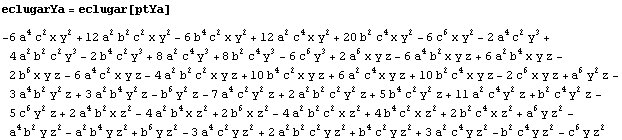
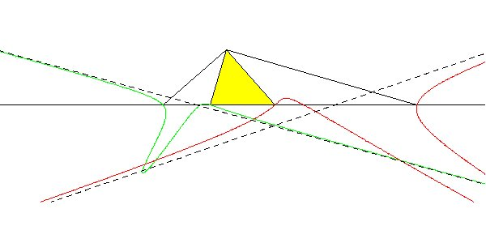
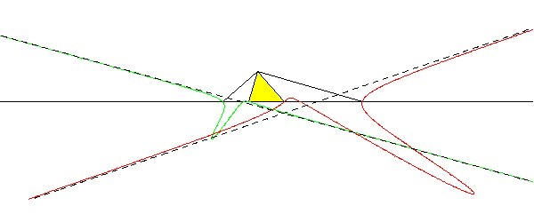

|
Sea el triángulo ABC y dada la ceviana arbitraria AA' donde
A' varía sobre el lado BC. Construimos los triángulos
rectángulos en el vértice A, que denotamos por ACB* y ABC*
donde B* y C* son los puntos más próximos a B y C,
y situados tal vez en la prolongación del lado BC. Por A'
trazamos la recta perpendicular a AA', y los puntos de corte de
ésta, con AC, AC*, AB, AB* los designamos
por B(A), N(A), C(A), M(A),
respectivamente. Y, con ellos, construimos los cuadriláteros P(A)
=C(A)BB*M(A) y Q(A) =CB(A)N(A)C*. |
|
Propuesto por Juan Bosco Romero Márquez
|
Solución de Francisco Javier García Capitán

Vamos a usar Mathematica y coordenadas baricéntricas. También trazaremos gráficas de curvas en forma implícita, por lo que escribimos:
<<Baricentricas`;
Pasamos ya a introducir las coordenadas de los puntos que intervienen en el problema. El punto A' del enunciado lo introducios como ptAp y los pntos B* y C* como ptBe y ptCe respectivamente.

Una vez hallados todos los puntos, comprobar el apartado a) consiste en comprobar que es nulo un determinante:

Para responder al apartado b) preparamos una función que calcula el lugar geométrico de un punto. Aparte de hallar la ecuación, la función eclugar presenta el resultado en la forma f(x, y, z), en vez de en la forma p(x, y, z)==q(x, y, z) que es como la devuelve Eliminate.

Usamos la función eclugar para hallar el lugar de X(A):

Ahora para hallar el lugar de Y(A).

Vemos que se trata de dos cúbicas. Representando las gráficas de estas curvas podemos comprobar que, por ejemplo, la primera, mostrada en verde, pasa por B y B*, y la segunda, mostrada en rojo, pasa por C y C*. Cada una de las curvas parece tener una asíntota, que también hemos dibujado.

Aquí tenemos la misma figura a otra escala:
